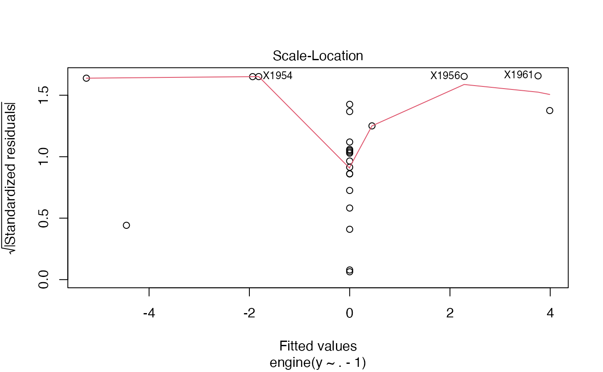
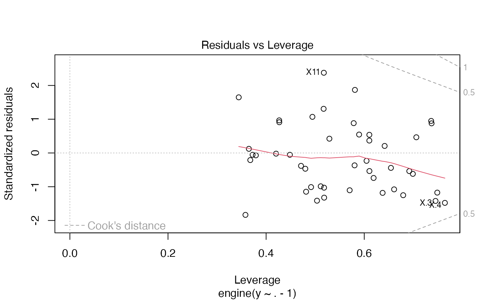

Ridge model
rvfl_summary_plot.Rmd
library(rvfl)Example 1: MPG Prediction (mtcars dataset)
Fit models
# Fit regular linear model
start <- proc.time()[3]
lm_model <- lm(mpg ~ ., data = train_data)
print(proc.time()[3] - start)## elapsed
## 0.014##
## Call:
## lm(formula = mpg ~ ., data = train_data)
##
## Residuals:
## Min 1Q Median 3Q Max
## -3.5211 -0.9792 -0.0324 1.1808 4.9814
##
## Coefficients:
## Estimate Std. Error t value Pr(>|t|)
## (Intercept) -5.054416 25.456900 -0.199 0.8455
## cyl 0.695392 1.396506 0.498 0.6262
## disp 0.005254 0.017342 0.303 0.7664
## hp -0.007610 0.027723 -0.274 0.7877
## drat 4.128157 2.724353 1.515 0.1520
## wt -1.621396 2.139071 -0.758 0.4610
## qsec 0.064356 0.932144 0.069 0.9459
## vs 0.138716 3.421183 0.041 0.9682
## am -0.498476 2.956568 -0.169 0.8685
## gear 4.402648 2.287816 1.924 0.0749 .
## carb -1.999389 1.299580 -1.538 0.1462
## ---
## Signif. codes: 0 '***' 0.001 '**' 0.01 '*' 0.05 '.' 0.1 ' ' 1
##
## Residual standard error: 2.464 on 14 degrees of freedom
## Multiple R-squared: 0.8938, Adjusted R-squared: 0.818
## F-statistic: 11.79 on 10 and 14 DF, p-value: 3.4e-05## 2.5 % 97.5 %
## (Intercept) -59.65403559 49.54520296
## cyl -2.29981561 3.69060001
## disp -0.03194096 0.04244882
## hp -0.06707095 0.05185084
## drat -1.71500030 9.97131342
## wt -6.20924769 2.96645550
## qsec -1.93489537 2.06360651
## vs -7.19899241 7.47642359
## am -6.83968216 5.84273112
## gear -0.50422869 9.30952400
## carb -4.78671119 0.78793282
# Fit calibrated model
start <- proc.time()[3]
ridge_model <- rvfl::rvfl(n_hidden_features=10L, lambda=10**seq(-10, 10, length.out=100), x = as.matrix(train_data[,-1]), y = train_data$mpg)
print(proc.time()[3] - start)## elapsed
## 0.081## Random Vector Functional Link (RVFL) Model Summary
## --------------------------------------------------
## Number of Hidden Features: 10
## Activation Function: relu
## Node Simulation Method: sobol
##
##
## Derivative Statistics:
## Mean StdDev CI_Lower CI_Upper P_Value
## cyl -0.138236475 4.559425e-15 -0.138236475 -0.138236475 2.533579e-82
## disp -0.002691253 6.287376e-17 -0.002691253 -0.002691253 3.199622e-83
## hp -0.006255885 1.011837e-16 -0.006255885 -0.006255885 3.523233e-84
## drat 0.794444228 5.384486e-15 0.794444228 0.794444228 1.907633e-86
## wt -0.450181717 7.040622e-15 -0.450181717 -0.450181717 2.879709e-84
## qsec 0.090752939 1.464035e-15 0.090752939 0.090752939 3.468605e-84
## vs 0.492812907 3.637933e-12 0.492812907 0.492812907 3.184529e-68
## am 0.636977474 3.681965e-12 0.636977474 0.636977474 7.340791e-69
## gear 0.378969079 2.586486e-15 0.378969079 0.378969079 1.989060e-86
## carb -0.290480655 1.121543e-14 -0.290480655 -0.290480655 6.519307e-82
## Significance
## cyl ***
## disp ***
## hp ***
## drat ***
## wt ***
## qsec ***
## vs ***
## am ***
## gear ***
## carb ***## NULLExample 2: Boston Housing Price Prediction
Fit models
# Fit regular linear model
start <- proc.time()[3]
lm_model <- lm(medv ~ ., data = train_data)
print(proc.time()[3] - start)## elapsed
## 0.01##
## Call:
## lm(formula = medv ~ ., data = train_data)
##
## Residuals:
## Min 1Q Median 3Q Max
## -15.220 -2.757 -0.494 1.863 26.961
##
## Coefficients:
## Estimate Std. Error t value Pr(>|t|)
## (Intercept) 35.832339 5.763210 6.217 1.30e-09 ***
## crim -0.095389 0.034717 -2.748 0.006282 **
## zn 0.042689 0.016086 2.654 0.008283 **
## indus -0.033013 0.073521 -0.449 0.653657
## chas 2.506064 0.939731 2.667 0.007977 **
## nox -17.521010 4.237379 -4.135 4.35e-05 ***
## rm 3.966727 0.477640 8.305 1.66e-15 ***
## age 0.006479 0.014922 0.434 0.664410
## dis -1.463187 0.232348 -6.297 8.17e-10 ***
## rad 0.253984 0.075379 3.369 0.000828 ***
## tax -0.009853 0.004350 -2.265 0.024068 *
## ptratio -1.002914 0.147016 -6.822 3.44e-11 ***
## black 0.008723 0.002984 2.923 0.003664 **
## lstat -0.501984 0.057704 -8.699 < 2e-16 ***
## ---
## Signif. codes: 0 '***' 0.001 '**' 0.01 '*' 0.05 '.' 0.1 ' ' 1
##
## Residual standard error: 4.835 on 390 degrees of freedom
## Multiple R-squared: 0.7403, Adjusted R-squared: 0.7316
## F-statistic: 85.51 on 13 and 390 DF, p-value: < 2.2e-16## 2.5 % 97.5 %
## (Intercept) 24.50149090 47.16318623
## crim -0.16364441 -0.02713269
## zn 0.01106383 0.07431451
## indus -0.17755967 0.11153316
## chas 0.65849254 4.35363615
## nox -25.85197459 -9.19004505
## rm 3.02765548 4.90579898
## age -0.02285933 0.03581667
## dis -1.91999833 -1.00637601
## rad 0.10578379 0.40218383
## tax -0.01840515 -0.00129986
## ptratio -1.29195676 -0.71387117
## black 0.00285660 0.01458927
## lstat -0.61543411 -0.38853422
# Fit calibrated model
start <- proc.time()[3]
ridge_model <- rvfl::rvfl(n_hidden_features=10L, lambda=10**seq(-10, 10, length.out=100), x = as.matrix(train_data[,-14]), y = train_data$medv)
print(proc.time()[3] - start)## elapsed
## 0.035## Random Vector Functional Link (RVFL) Model Summary
## --------------------------------------------------
## Number of Hidden Features: 10
## Activation Function: relu
## Node Simulation Method: sobol
##
##
## Derivative Statistics:
## Mean StdDev CI_Lower CI_Upper P_Value
## crim -0.152720908 4.494768e-13 -0.152720908 -0.152720908 0.000000e+00
## zn -0.050159952 4.845844e-03 -0.051111766 -0.049208138 9.312597e-105
## indus 0.180779801 2.694666e-14 0.180779801 0.180779801 0.000000e+00
## chas 4.484327582 1.086106e-11 4.484327582 4.484327582 0.000000e+00
## nox -30.739470810 6.361871e-14 NA NA NA
## rm 0.676350256 5.237704e-15 NA NA NA
## age 0.065921212 1.021842e-15 NA NA NA
## dis -0.522955647 8.892063e-15 NA NA NA
## rad 0.153122015 7.610750e-15 0.153122015 0.153122015 0.000000e+00
## tax -0.000699621 6.361451e-17 -0.000699621 -0.000699621 0.000000e+00
## ptratio -0.206126438 1.449176e-15 NA NA NA
## black -0.005566961 8.810461e-17 NA NA NA
## lstat -0.383839907 3.540817e-15 NA NA NA
## Significance
## crim ***
## zn ***
## indus ***
## chas ***
## nox
## rm
## age
## dis
## rad ***
## tax ***
## ptratio
## black
## lstat
## NULLExample 3: Economic Indicators (Longley dataset)
Fit models
# Fit regular linear model
start <- proc.time()[3]
lm_model <- lm(Employed ~ ., data = train_data)
print(proc.time()[3] - start)## elapsed
## 0.006##
## Call:
## lm(formula = Employed ~ ., data = train_data)
##
## Residuals:
## 1948 1951 1962 1960 1953 1958 1956 1947
## -0.15209 0.23935 -0.15902 -0.15702 0.04017 -0.11637 0.35418 0.07762
## 1954 1955 1952 1961
## -0.03138 -0.23164 -0.18207 0.31828
##
## Coefficients:
## Estimate Std. Error t value Pr(>|t|)
## (Intercept) -3.314e+03 9.930e+02 -3.338 0.02061 *
## GNP.deflator -7.877e-02 1.033e-01 -0.763 0.48016
## GNP -6.186e-03 4.032e-02 -0.153 0.88407
## Unemployed -1.578e-02 6.060e-03 -2.604 0.04802 *
## Armed.Forces -1.074e-02 2.478e-03 -4.336 0.00745 **
## Population -3.256e-01 2.798e-01 -1.164 0.29697
## Year 1.758e+00 5.066e-01 3.470 0.01784 *
## ---
## Signif. codes: 0 '***' 0.001 '**' 0.01 '*' 0.05 '.' 0.1 ' ' 1
##
## Residual standard error: 0.3053 on 5 degrees of freedom
## Multiple R-squared: 0.9962, Adjusted R-squared: 0.9916
## F-statistic: 216.2 on 6 and 5 DF, p-value: 7.153e-06## 2.5 % 97.5 %
## (Intercept) -5.866601e+03 -7.615995e+02
## GNP.deflator -3.443182e-01 1.867776e-01
## GNP -1.098296e-01 9.745798e-02
## Unemployed -3.135588e-02 -2.021522e-04
## Armed.Forces -1.711223e-02 -4.374897e-03
## Population -1.044745e+00 3.935168e-01
## Year 4.557539e-01 3.060217e+00
# Fit calibrated model
start <- proc.time()[3]
ridge_model <- rvfl::rvfl(n_hidden_features=10L, lambda=10**seq(-10, 10, length.out=100), x = as.matrix(train_data[,-7]), y = train_data$Employed)
print(proc.time()[3] - start)## elapsed
## 0.045## Random Vector Functional Link (RVFL) Model Summary
## --------------------------------------------------
## Number of Hidden Features: 10
## Activation Function: relu
## Node Simulation Method: sobol
##
##
## Derivative Statistics:
## Mean StdDev CI_Lower CI_Upper
## GNP.deflator -9.240589e-02 3.012897e-16 NA NA
## GNP -3.748982e-05 1.509959e-16 -3.748982e-05 -3.748982e-05
## Unemployed 1.747488e-02 2.706317e-16 1.747488e-02 1.747488e-02
## Armed.Forces -3.242640e-02 4.355503e-16 -3.242640e-02 -3.242640e-02
## Population 9.068076e-02 6.858398e-16 9.068076e-02 9.068076e-02
## Year 4.334012e-01 7.523075e-16 NA NA
## P_Value Significance
## GNP.deflator NA
## GNP 1.801092e-35 ***
## Unemployed 1.023940e-42 ***
## Armed.Forces 6.680354e-43 ***
## Population 1.192624e-43 ***
## Year NA
## Warning in sqrt(crit * p * (1 - hh)/hh): NaNs produced
## Warning in sqrt(crit * p * (1 - hh)/hh): NaNs produced## NULLExample 4: US Crime Rate Analysis
Fit models
# Fit regular linear model
start <- proc.time()[3]
lm_model <- lm(y ~ ., data = train_data)
print(proc.time()[3] - start)## elapsed
## 0.012##
## Call:
## lm(formula = y ~ ., data = train_data)
##
## Residuals:
## Min 1Q Median 3Q Max
## -391.18 -114.34 -14.92 117.15 460.03
##
## Coefficients:
## Estimate Std. Error t value Pr(>|t|)
## (Intercept) -6991.5860 2219.2203 -3.150 0.00483 **
## M 7.1029 5.4076 1.313 0.20319
## So -89.2556 183.9512 -0.485 0.63255
## Ed 22.1862 7.7816 2.851 0.00956 **
## Po1 19.4504 15.2637 1.274 0.21648
## Po2 -10.7837 16.0263 -0.673 0.50837
## LF -1.3616 1.8522 -0.735 0.47038
## M.F 2.9017 2.6491 1.095 0.28576
## Pop -0.9371 1.6448 -0.570 0.57492
## NW 0.8155 0.9873 0.826 0.41810
## U1 -8.4003 5.8482 -1.436 0.16562
## U2 19.8835 11.0640 1.797 0.08671 .
## GDP 0.7120 1.2620 0.564 0.57861
## Ineq 8.0589 2.8019 2.876 0.00904 **
## Prob -3533.2550 2862.6770 -1.234 0.23074
## Time 1.3920 9.4699 0.147 0.88454
## ---
## Signif. codes: 0 '***' 0.001 '**' 0.01 '*' 0.05 '.' 0.1 ' ' 1
##
## Residual standard error: 234.8 on 21 degrees of freedom
## Multiple R-squared: 0.758, Adjusted R-squared: 0.5851
## F-statistic: 4.385 on 15 and 21 DF, p-value: 0.001081## 2.5 % 97.5 %
## (Intercept) -11606.707241 -2376.464825
## M -4.142866 18.348646
## So -471.803028 293.291831
## Ed 6.003559 38.368826
## Po1 -12.292291 51.193066
## Po2 -44.112293 22.544935
## LF -5.213545 2.490260
## M.F -2.607377 8.410782
## Pop -4.357700 2.483540
## NW -1.237650 2.868551
## U1 -20.562297 3.761712
## U2 -3.125406 42.892337
## GDP -1.912548 3.336557
## Ineq 2.232069 13.885810
## Prob -9486.517778 2420.007809
## Time -18.301822 21.085767
# Fit calibrated model
start <- proc.time()[3]
ridge_model <- rvfl::rvfl(n_hidden_features=10L, lambda=10**seq(-10, 10, length.out=100), x = as.matrix(train_data[,-16]), y = train_data$y)
print(proc.time()[3] - start)## elapsed
## 0.034## Random Vector Functional Link (RVFL) Model Summary
## --------------------------------------------------
## Number of Hidden Features: 10
## Activation Function: relu
## Node Simulation Method: sobol
##
##
## Derivative Statistics:
## Mean StdDev CI_Lower CI_Upper P_Value
## M 5.2538485 7.725961e-15 NA NA NA
## So -92.0902989 1.770662e-10 -92.0902989 -92.0902989 5.783176e-107
## Ed 2.9000441 6.255898e-15 NA NA NA
## Po1 2.2536893 1.151782e-14 NA NA NA
## Po2 2.3610994 1.522981e-14 NA NA NA
## LF 0.7729132 2.466761e-15 NA NA NA
## M.F 0.9284752 2.636893e-15 NA NA NA
## Pop -0.2759635 7.907530e-14 -0.2759635 -0.2759635 2.096878e-114
## NW 0.5677779 7.038032e-15 0.5677779 0.5677779 1.112566e-126
## U1 -1.8670268 6.463918e-15 NA NA NA
## U2 -2.4253262 2.157987e-14 -2.4253262 -2.4253262 5.628326e-128
## GDP 0.7095275 1.444239e-15 NA NA NA
## Ineq 0.7155947 3.883665e-15 NA NA NA
## Prob -3680.3338967 1.663199e-11 NA NA NA
## Time 11.4828793 5.345821e-14 NA NA NA
## Significance
## M
## So ***
## Ed
## Po1
## Po2
## LF
## M.F
## Pop ***
## NW ***
## U1
## U2 ***
## GDP
## Ineq
## Prob
## Time
## NULLExample 5: Car Price Analysis (Cars93 dataset)
Load and prepare data
data(Cars93, package = "MASS")
# Remove rows with missing values
Cars93 <- na.omit(Cars93)
# Select numeric predictors and price as response
predictors <- c("MPG.city", "MPG.highway", "EngineSize", "Horsepower",
"RPM", "Rev.per.mile", "Fuel.tank.capacity", "Length",
"Wheelbase", "Width", "Turn.circle", "Weight")
car_data <- Cars93[, c(predictors, "Price")]
set.seed(1243)
train_idx <- sample(nrow(car_data), size = floor(0.8 * nrow(car_data)))
train_data <- car_data[train_idx, ]
test_data <- car_data[-train_idx, -which(names(car_data) == "Price")]Fit models
# Fit regular linear model
start <- proc.time()[3]
lm_model <- lm(Price ~ ., data = train_data)
print(proc.time()[3] - start)## elapsed
## 0.01##
## Call:
## lm(formula = Price ~ ., data = train_data)
##
## Residuals:
## Min 1Q Median 3Q Max
## -8.9444 -3.4879 -0.0823 2.5740 10.7036
##
## Coefficients:
## Estimate Std. Error t value Pr(>|t|)
## (Intercept) 6.0285088 31.8235292 0.189 0.8505
## MPG.city -0.3069383 0.4798163 -0.640 0.5252
## MPG.highway -0.0041568 0.4591254 -0.009 0.9928
## EngineSize 2.4810783 2.4779636 1.001 0.3213
## Horsepower 0.1016741 0.0446071 2.279 0.0268 *
## RPM 0.0001602 0.0023006 0.070 0.9448
## Rev.per.mile 0.0049762 0.0026868 1.852 0.0697 .
## Fuel.tank.capacity -0.1866149 0.5198553 -0.359 0.7211
## Length 0.0203242 0.1333518 0.152 0.8795
## Wheelbase 0.4888949 0.2655782 1.841 0.0713 .
## Width -0.8957689 0.4446575 -2.015 0.0491 *
## Turn.circle -0.3835124 0.3579624 -1.071 0.2889
## Weight 0.0041302 0.0059593 0.693 0.4914
## ---
## Signif. codes: 0 '***' 0.001 '**' 0.01 '*' 0.05 '.' 0.1 ' ' 1
##
## Residual standard error: 4.731 on 52 degrees of freedom
## Multiple R-squared: 0.7886, Adjusted R-squared: 0.7398
## F-statistic: 16.16 on 12 and 52 DF, p-value: 1.548e-13## 2.5 % 97.5 %
## (Intercept) -5.783007e+01 69.887091986
## MPG.city -1.269760e+00 0.655883438
## MPG.highway -9.254594e-01 0.917145804
## EngineSize -2.491319e+00 7.453475962
## Horsepower 1.216348e-02 0.191184768
## RPM -4.456410e-03 0.004776746
## Rev.per.mile -4.152533e-04 0.010367616
## Fuel.tank.capacity -1.229781e+00 0.856550981
## Length -2.472657e-01 0.287914102
## Wheelbase -4.402679e-02 1.021816593
## Width -1.788039e+00 -0.003498354
## Turn.circle -1.101817e+00 0.334791684
## Weight -7.828121e-03 0.016088453
# Fit calibrated model
start <- proc.time()[3]
ridge_model <- rvfl::rvfl(n_hidden_features=10L, lambda=10**seq(-10, 10, length.out=100), x = as.matrix(train_data[,-which(names(train_data) == "Price")]),
y = train_data$Price)
print(proc.time()[3] - start)## elapsed
## 0.024## Random Vector Functional Link (RVFL) Model Summary
## --------------------------------------------------
## Number of Hidden Features: 10
## Activation Function: relu
## Node Simulation Method: sobol
##
##
## Derivative Statistics:
## Mean StdDev CI_Lower CI_Upper
## MPG.city -1.419309710 2.385042e-15 NA NA
## MPG.highway 0.617404449 1.723753e-15 NA NA
## EngineSize 2.405020135 1.280516e-14 NA NA
## Horsepower -0.014276341 1.793531e-16 -0.01427634 -0.01427634
## RPM -0.001808223 6.070322e-18 NA NA
## Rev.per.mile 0.010468670 1.537581e-17 NA NA
## Fuel.tank.capacity 1.453563178 2.297518e-15 NA NA
## Length -0.243981243 1.698258e-16 NA NA
## Wheelbase 0.828600532 7.691851e-16 NA NA
## Width 0.030780888 9.182240e-16 0.03078089 0.03078089
## Turn.circle -1.755292917 7.570712e-16 NA NA
## Weight 0.006863605 9.894199e-18 NA NA
## P_Value Significance
## MPG.city NA
## MPG.highway NA
## EngineSize NA
## Horsepower 4.655216e-224 ***
## RPM NA
## Rev.per.mile NA
## Fuel.tank.capacity NA
## Length NA
## Wheelbase NA
## Width 4.754959e-218 ***
## Turn.circle NA
## Weight NA
## NULL